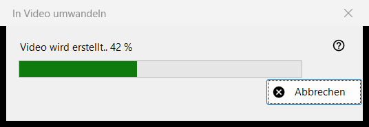
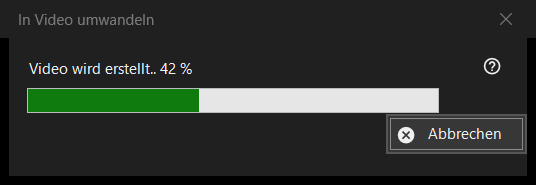

In Video umwandeln
Verwendungszweck
Das Fortschrittsfenster von In Video umwandeln: Es macht aus einem animierten GIF, WebP oder APNG ein MP4 und löscht dann das Original. Es öffnet sich, nachdem Sie die Umwandlung bestätigt haben, bleibt über dem Viewer, bis die Arbeit endet, und hat eine einzige Schaltfläche, Abbrechen.


In dieser Reihenfolge
- Zeigen Sie ein animiertes Bild an.
- Wählen Sie im Bildmenü In Video umwandeln.. oder drücken Sie die Schaltfläche In Video umwandeln der Symbolleiste; beide gibt es nur, solange eine Animation angezeigt wird, und es gibt keine Tastenkombination.
- Lesen Sie die Bestätigung und drücken Sie Umwandeln.
- Wenn Sie zum Herunterladen von FFmpeg gefragt werden, antworten Sie mit Ja.
- Beobachten Sie den Balken oder drücken Sie Abbrechen.
- Der Viewer öffnet das neue MP4.
Die Elemente
Start der Umwandlung
Der Befehl wird nur für Animationen angeboten, nie für ein Standbild oder ein Video, und der Viewer lehnt ihn bei einem geschützten Container oder an einem Ort ab, an dem neben der Datei nichts geschrieben werden kann. Die Wiedergabe stoppt, sobald die Arbeit beginnt.
Die Bestätigung
Sie lautet sinngemäß: Das Original wird in das neue MP4 umgewandelt, und das Original wird endgültig gelöscht, am Papierkorb vorbei. Hat die Animation Transparenz, kommt hinzu: Transparenz wird mit Schwarz gefüllt. Abbrechen ist die Standardantwort. Das Kontrollkästchen Bis zum Schließen des Programms nicht mehr fragen gilt nur, bis der Viewer geschlossen wird; es wird nie gespeichert.
FFmpeg
Die Umwandlung verwendet FFmpeg, das nicht zum Programm gehört. Fehlt es, werden Sie einmal nach dem Download gefragt (die Frage zeigt die Größe; die Datei kommt von der Projektseite, wird lokal gespeichert und ist freie Software unter der GPL). Antworten Sie mit Nein, endet der Vorgang hier, und nichts wird erstellt oder gelöscht.
Das Fortschrittsfenster
Die Titelzeile lautet Video wird erstellt.. mit einer Prozentangabe, und der Balken folgt ihr. Ist die Länge der Animation unbekannt, pendelt der Balken nur hin und her, ohne Zahl. Abbrechen, die Esc-Taste und das Schließfeld bedeuten dasselbe: Das Fenster bleibt einen Moment stehen, bis der Encoder wirklich angehalten hat, schließt sich dann, und der Viewer meldet Die Umwandlung wurde abgebrochen. Der Viewer lässt sich währenddessen nicht bedienen.
Was Sie erhalten
Ein MP4 im selben Ordner mit demselben Namen (ist der Name vergeben, wird eine Zahl in Klammern angehängt), mit der Bildrate der Animation, zwischen 1 und 50 Bildern pro Sekunde. Es wird unter einem temporären Namen geschrieben und nach Fertigstellung umbenannt. Das Original wird erst gelöscht, wenn das MP4 unter seinem endgültigen Namen existiert und geprüft wurde, dass es die ganze Animation enthält. Die Statuszeile sagt Fertig, und der Viewer zeigt das Video.
Wenn etwas schiefgeht
Das Original bleibt erhalten, und die Statuszeile nennt den Grund: Das Video konnte nicht erstellt werden, mit dem Grund; das Video wurde erstellt, aber das Original ließ sich nicht löschen; oder das Video konnte nicht auf Vollständigkeit geprüft werden und das Original blieb erhalten. Ein fehlgeschlagener Lauf lässt das Original unberührt, entfernt die temporäre Datei und schreibt Details ins Protokoll.